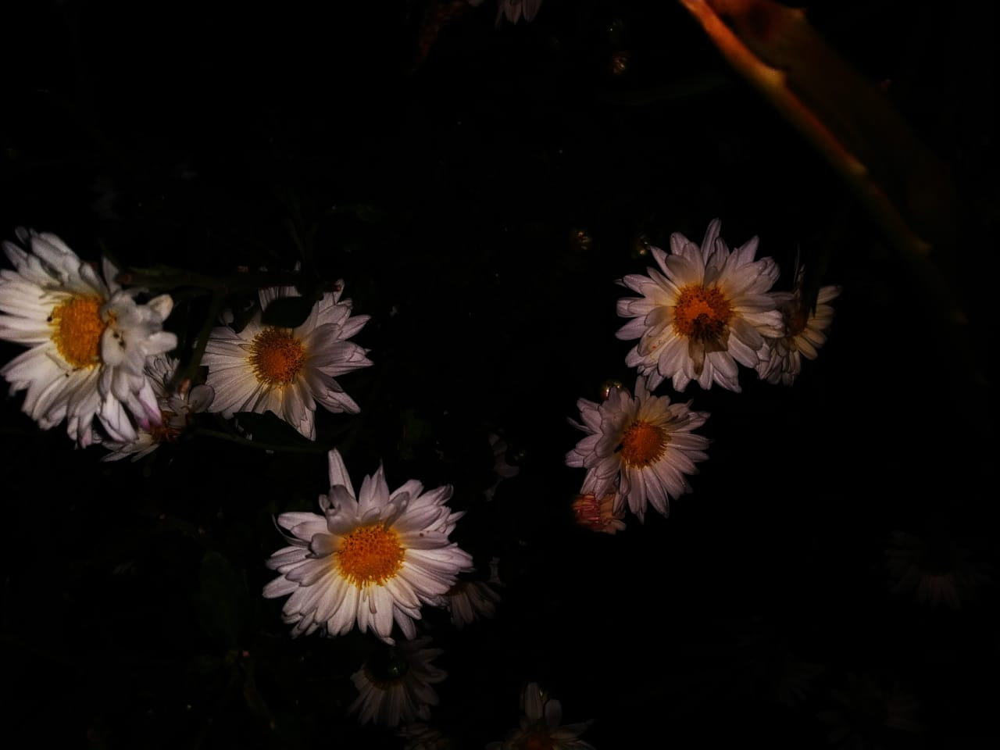

From the graceful petals of a rose to the intricate patterns of a sunflower, each flower tells a story of
beauty and resilience. Whether adorning gardens, bouquets, or special events, flowers have the
remarkable ability to evoke joy, convey messages, and bring a sense of tranquility.They will convey the message of nature's beauty.Try to fall in love with nature. It will be the best feeling in the whole universe.
Comments
Looking cool
Nature is beautiful
Can I get this?
Reply: Should give it to my mom -------- coz it is a coriander leaf
From the graceful petals of a rose to the intricate patterns of a sunflower, each flower tells a story of beauty and resilience. Whether adorning gardens, bouquets, or special events, flowers have the remarkable ability to evoke joy, convey messages, and bring a sense of tranquility.They will convey the message of nature's beauty.Try to fall in love with nature. It will be the best feeling in the whole universe.
Comments
Looking cool
Nature is beautiful
Can I get this?
Reply: Should give it to my mom -------- coz it is a coriander leaf
